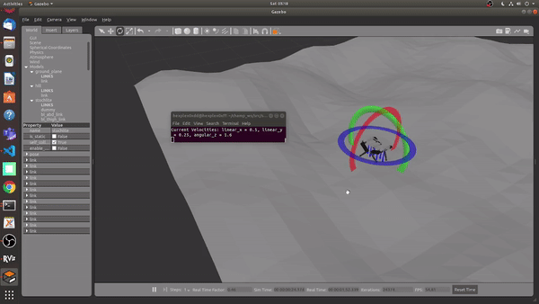
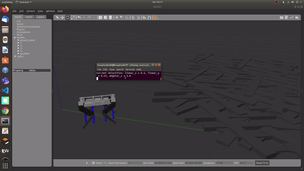
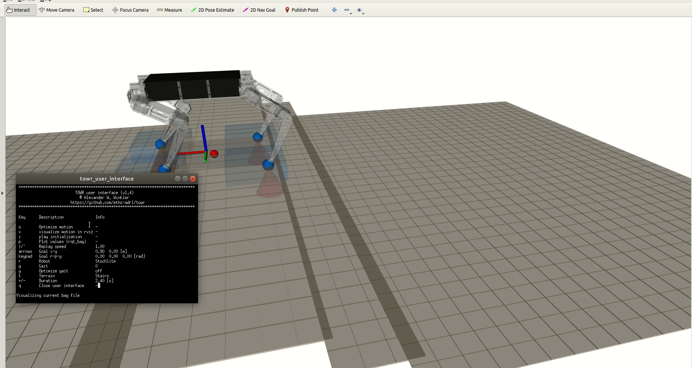

Estimated Foot forces from the MPC
Estimated Foot forces from the MPC
This post is a collection of Optimal Control algorithm that I either implemented or Integrated with the quadruped ‘Stochlite’ at Stochlab, IISc. These are implemented in ROS so that we can deploy them directly on the hardware. My major contribution was to integrate these well established optimal control algorithms with the ROS framework of the Quadruped.
Majority of the Optimal control do not have significant difference in performance in Hardware as I was unable to test them in many scenarios through the simulators.
Inspired from [1] implemented the convex mpc for the quadruped. along with [2] a whole body impulse Controller which will help to trace the estimated foot forces estimated from the Controller. While the MPC uses an approximate Linear model of the quadruped. The whole body impulse controller considers the Floating base dynamics of the robot, while the MPC uses the Single Rigid body Dynamics. I also implemented a modified version of the State Estimator for the quadruped need for the Algorithms
Estimated Foot forces from the MPC
Below are a few clips where the MPC stablizes the torso and attains a
 Using the MPC on the Hilly terrain, with no prior knowledge of the terrain
 Using the MPC and WBiC on Rough terrain, with no prior knowledge of the terrain
As it can be seen from the above output the quadruped stablizes itself instantaniously as it has no prior knowledge like an heightmap of the world.
We have used TOWR[3] for trajectory optimization, Below is the output from the towr gui, for the quadruped.
 Stochlite in TOWR
As seen in the above output towr is able to produce feasible trajectories of foot positions and forces for the quadruped in differnt terrains.
Integrating towr would require a heightmap of the world which would need an online 3D Mapping of the world using a depth camera which currently was not available on the platform hence limiting the developing towards it.
But later I integrate towr, only for Flat ground and ran it at 4 Hz for updating the optimal foot positions. As the rate is too slow and the difference between the state at the start of the optimization and current would be drastically different, I implemented towr to run parallely with estimation of the current state of the robot based on the control input of the previous optimized solution and the dynamics model of the robot solved to fetch the state at a future timestep.
We are further working towards improving the performance of these algorithm by using Reinforcement Learning with formulations to work along side these algorithms and also in tandom with these algorithm.
[1]Dynamic Locomotion in the MIT Cheetah 3 Through Convex Model-Predictive Control, DOI: 10.1109/IROS.2018.8594448, Jared Di Carlo, Patrick Wensing, Benjamin Katz, Sangbae Kim
[2]Highly Dynamic Quadruped Locomotion via Whole-Body Impulse Control and Model Predictive Control, Donghyun Kim, Jared Di Carlo, Benjamin Katz, Gerado Bledt, Sangbae Kim
[3]Gait and Trajectory Optimization for Legged Systems Through Phase-Based End-Effector Parameterization, Alexander W. Winkler, C. Dario Bellicoso, Marco Hutter, jonas Buchli